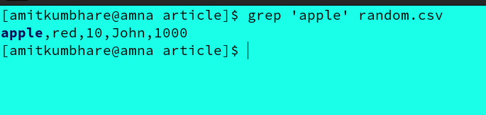
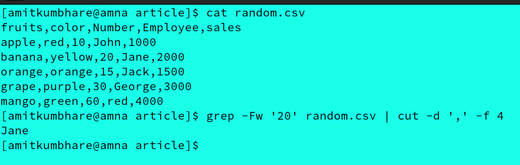
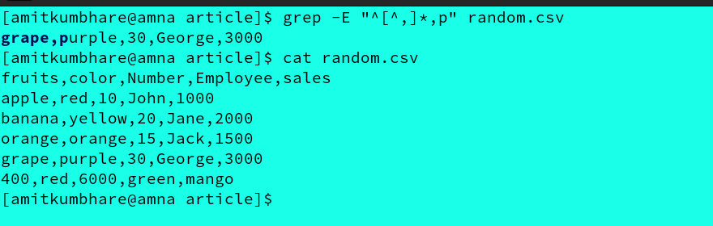
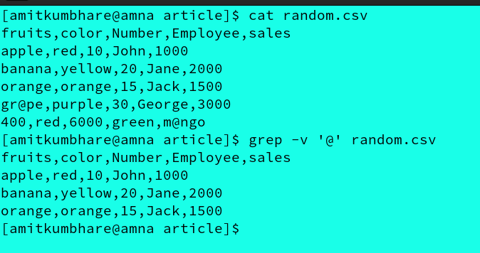
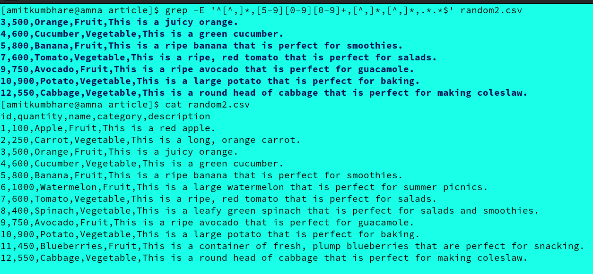
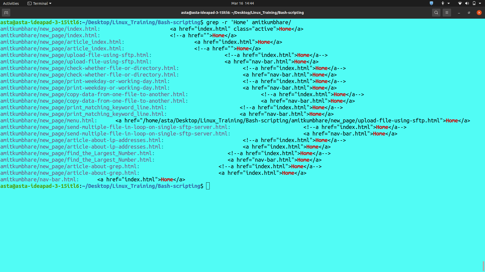
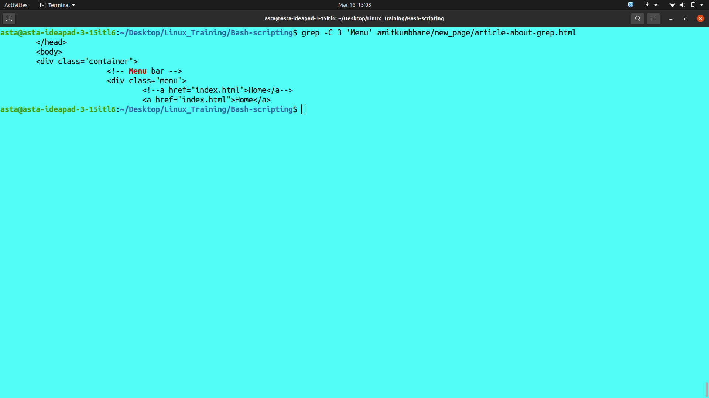
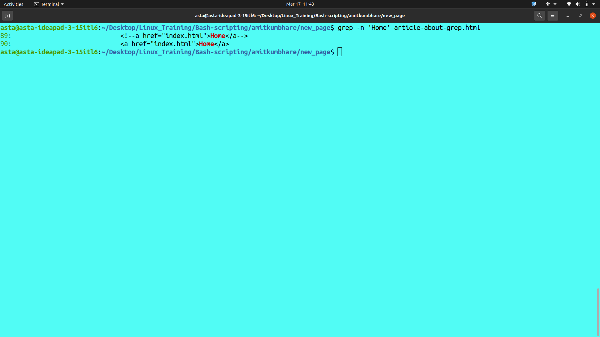
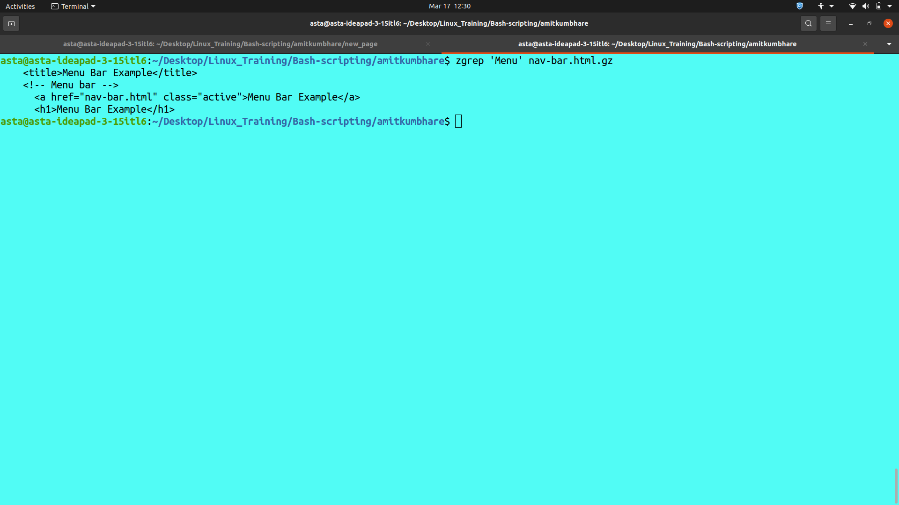

Grep is a powerful command-line tool that allows users to search for patterns in text files. CSV (Comma-Separated Value) files are a common format for storing and exchanging tabular data. In this article, we will explore some different ways to use the grep command with CSV files as input.
The simplest use case of grep is to search for a specific string in a CSV file. For example, if we want to search for all occurrences of the word "apple" in a file named "random.csv", we can use the following command:
grep 'apple' random.csv
The command grep 'apple' random.csv is used to search for the word "apple" in the file "random.csv".
This will display all the lines in the file that contain the word "apple".
Sometimes, we may only be interested in searching for a string in a specific column of a CSV file. In this case, we can use the -F (fixed-string) option of grep along with the -w (word-regexp) option to match only the whole word.
For example:
grep -Fw '20' random.csv | cut -d ',' -f 4
grep -Fw '20' random.csv: searches for lines in the random.csv file that contain the exact word "20" as a whole word (i.e., surrounded by word boundaries).|: pipes the output of the grep command to the next commandcut -d ',' -f 4: selects the fourth field of each line, using comma (,) as the field delimiter.We can also use grep to search for records that match a specific pattern. For example, if we want to search for all records where the second column starts with the letter "r", we can use the following command:
grep -E "^[^,]*,p" random.csv
grep: This is the command to search for text patterns in files.-E: This option tells grep to use extended regular expressions for matching patterns."^[^,]*,p": This is the regular expression pattern to search for.^: Matches the start of a line.[^,]*: Matches any sequence of characters that does not contain a comma.,: Matches a comma.p: Matches the letter "p".random.csv: This is the name of the file to search in.So, the command will match any lines in "random.csv" that begin with a string that does not contain a comma, followed by a comma, followed by the letter "p".
The grep command is a Linux/Unix command-line utility used to search for a specified text pattern in one or more files or streams.
The -v option in grep stands for "invert match", which means that the command will return all lines that do not contain the specified pattern.
In this case, the pattern is the @ symbol, so the command will return all lines in the file random.csv that do not contain the @ symbol.
grep -v '@' random.csv
grep: is a command-line utility in Unix-based operating systems that searches for patterns within files.-v: is an option that stands for "invert match," which means the command will display all lines that do not match the specified pattern.'@': is the pattern that we are searching for in each line of the file "random.csv".random.csv: is the name of the file that we are searching for the pattern in.this command will search through the "random.csv" file and display all lines that do not contain the "@" symbol. This can be useful for filtering out unwanted data or finding lines that match a specific criteria.
So, the command will match any line that starts with a string of characters that does not contain a comma, followed by a number in the range of 500-999, followed by two strings of characters that do not contain commas, and ending with any number of any characters.
grep -E '^[^,]*,[5-9][0-9][0-9]+,[^,]*,[^,]*,.*.*$' random2.csv
So, the command will search for lines in the "random2.csv" file that meet the following criteria:
grep: Command to search for a pattern in a file-E: Option to enable extended regular expression syntax.^[^,]*,[5-9][0-9][0-9]+,[^,]*,[^,]*,.*.*$: Option to enable extended regular expression syntax.^: Start of the line[^,]*,: Zero or more characters that are not commas followed by a comma[5-9][0-9][0-9]+,: A number between 500 and 999 followed by a comma[^,]*,[^,]*,: Zero or more characters that are not commas followed by a comma, twice.*.* : Zero or more characters of any type$: End of the lineThis will display all the lines in the file that have a value greater than 500 in the second column.
This command will search for all files in the given directory and its subdirectories for lines containing the specified pattern.
grep -r 'Home' amitkumbhare/
grep: Command to search for a pattern in a file-r option specifies to search for the pattern recursively in all subdirectories within the specified directory.
'Home' is the text string or pattern that is being searched for.amitkumbhare/ is the directory in which the search should be performed.This command will search for all lines in the file.txt that contain the specified pattern and also display 3 lines of context before and after the matched line.
grep -C 3 'Menu' amitkumbhare/new_page/article-about-grep.html
The command grep -C 3 'Menu' amitkumbhare/new_page/article-about-grep.html is used to search for the pattern 'Menu' in the file 'article-about-grep.html' and display the three lines before and after each occurrence of the pattern.
`grep` is a command-line utility that searches for a specified pattern or text string in one or more files.`-C 3` option specifies to display 3 lines before and after each occurrence of the pattern in the file.`Menu` is the pattern that is being searched for.`amitkumbhare/new_page/article-about-grep.html` is the file in which the search should be performed.This command will search for all lines in the article-about-grep.html that contain the specified pattern and display the line numbers along with the matched lines.
grep -n 'Home' article-about-grep.html
The command grep -n 'Home' article-about-grep.html is used to search for the pattern 'Home' in the file 'article-about-grep.html' and display the line number(s) where the pattern is found.
`grep` is a command-line utility that searches for a specified pattern or text string in one or more files.`-n` option specifies to display the line number(s) where the pattern is found.`'Home'` is the pattern that is being searched for.`article-about-grep.html` is the file in which the search should be performed.This command will search for all lines in the compressed nav-bar.html.gz that contain the specified pattern.
zgrep 'Menu' nav-bar.html.gz
The command zgrep 'Menu' nav-bar.html.gz is used to search for the pattern 'Menu' in a compressed file called nav-bar.html.gz using the zgrep command.